Collaborated company goals and put them in terms of implementation. As a company, were able to figure out what we wanted out of making this website, what features we want to showcase, and the overall feel we wanted users to have when coming to this website.
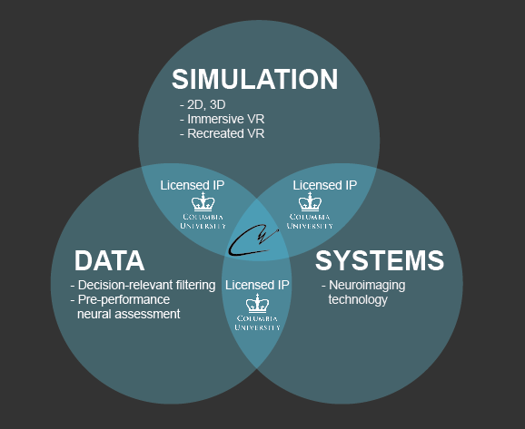I took deCervo's' main ideas, logos, and colors to mix and match with differennt template styles and designs. This step showcased the design process of taking what is clean and effective and aligning it with the goals of deCervo.
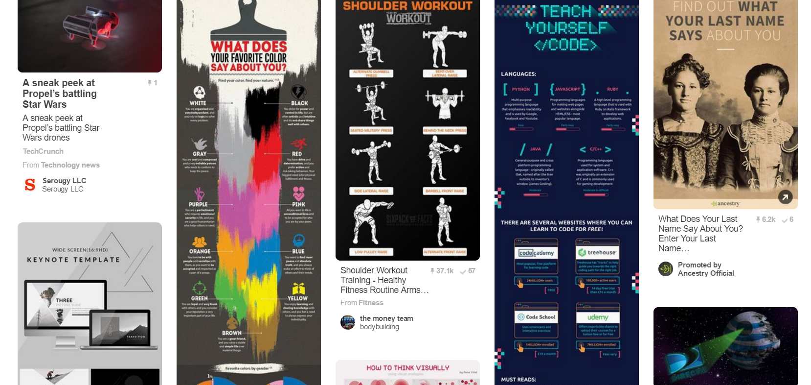The goal was to have fluidity throughout - have each click lead to something useful for the user. During this step I was able to fill in the gaps that were uncovered in the intial collection of ideas and themes for the website.
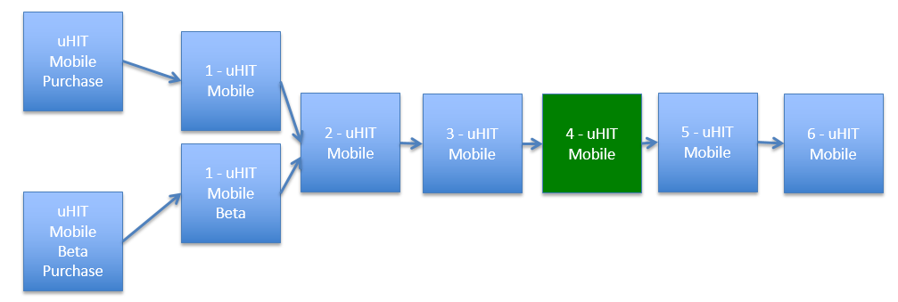The mockups contained every aspect the website needed, from logos, to informational sections, to slideshow functionality. These were first done using Illustrator and later pushed into Axure which is a high-fidelity prototyping tool.
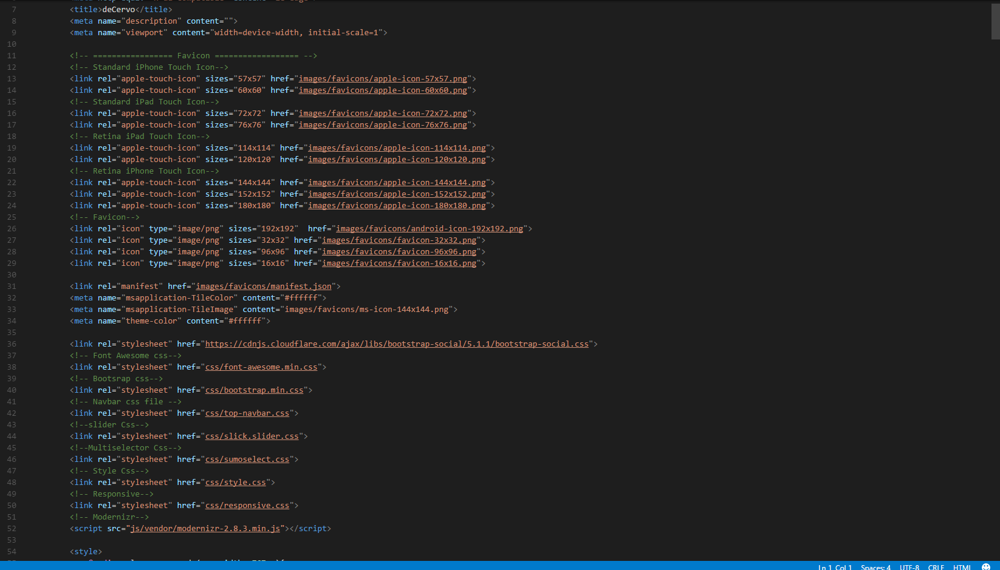Provided the developers a base template to work off of when implementing the site. This puts together the frameworks, theme classes, and base layout; helping to expedite the process once handed off to the developers.
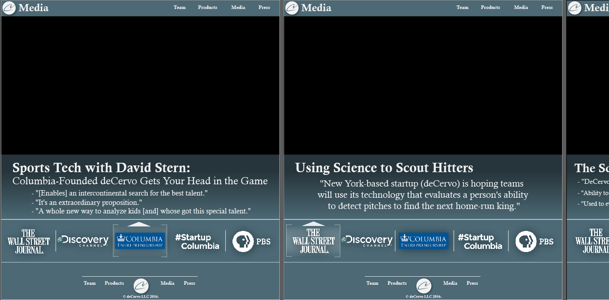The first part of this was finding a web developers that both had the skills to implement my designs from the wireframes and the design sense to take what I invisioned to code. This brought my wireframes to life, adding styling, movements, slideshows and other vital functionality that turned the simple frames to a complete website. Consistent scheduling, check-ins, and code checking were vital for me to get the website to how I envisioned.
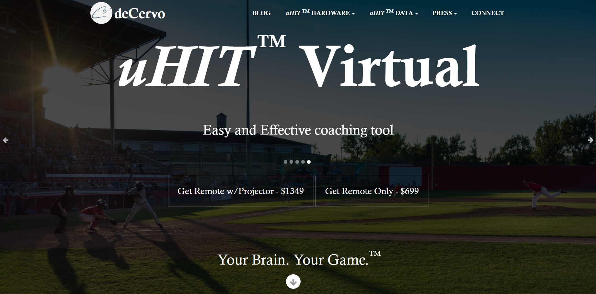Implemented third party resources into our website to increase functionality. This included payment methods(Stripe), ways to subscrive to email lists(Mailchimp), and creating sections for blogs and similar discussion forums(Wordpress as the base with forum options).
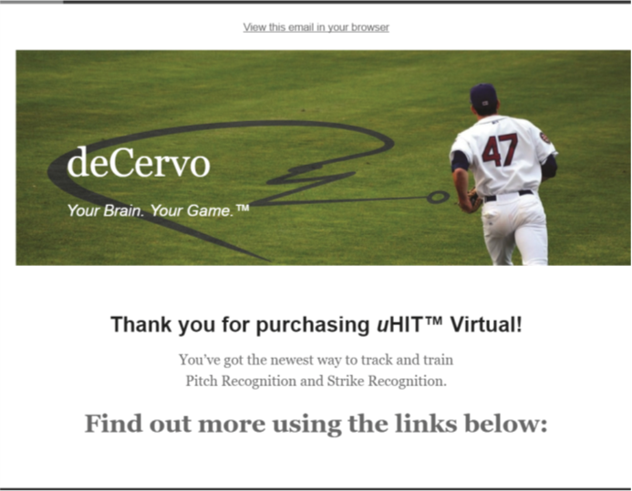Brought responsiveness of the site to works well on all types of mobile devices and large desktop screens.
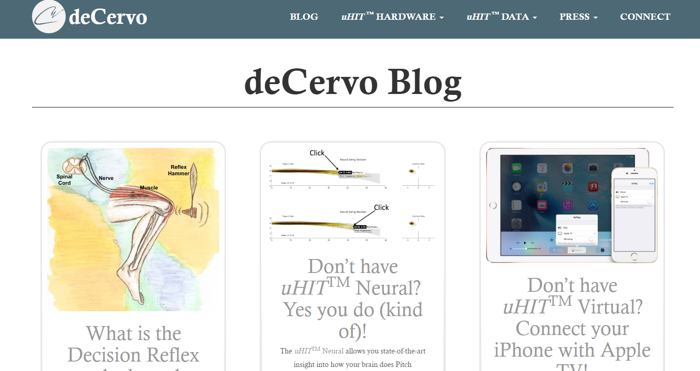Determine the target audience and users, explore design options for system implementation, and create a virtual platform.
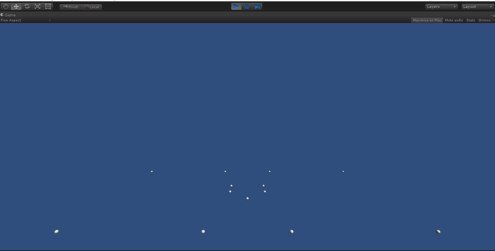Wireframing and map user flow using Illustrator for designs, outlines, and user flows. Designed first for iOS and Android platforms and then formatted for desktop and tablets.
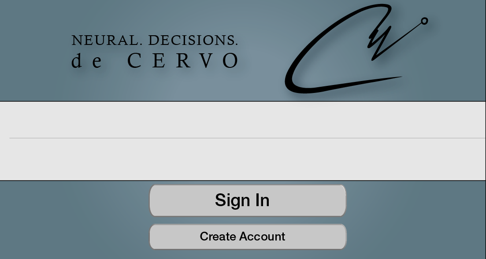Work in Unity, emulators, and pushing APKs to all types of devices to ensure an optimal product.
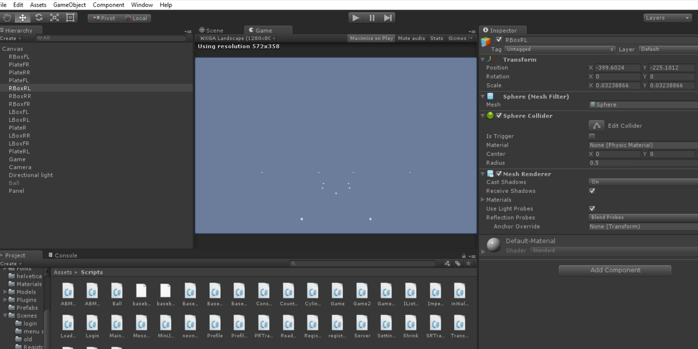Brought 3D game developers to create the baseball enviroment, field, and animations.
Reconstructed buttons, menus, and interfaces based off user feedback to make the app useable and thoroughly responsive.
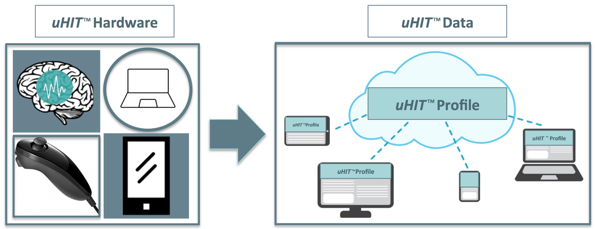Optimize the app experience for all target users based off Use Cases(baseball players, possiilties of cognitive performancy, and analysing player data)
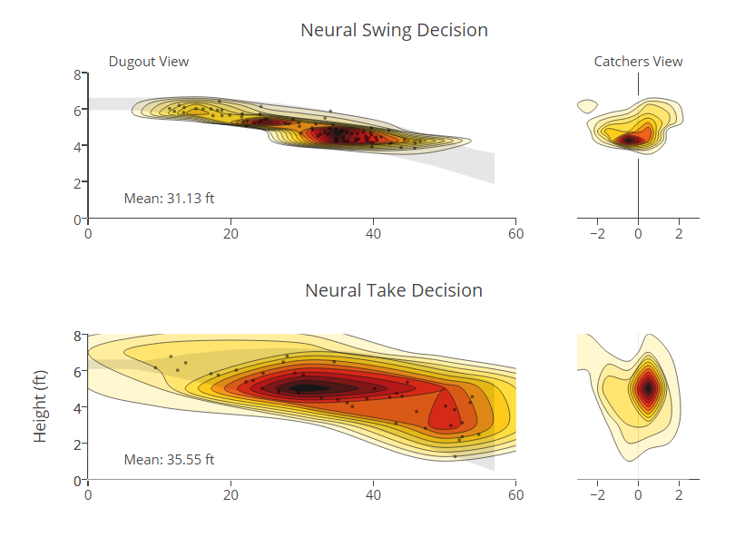